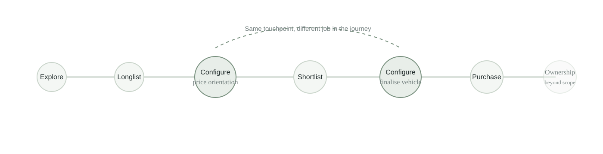
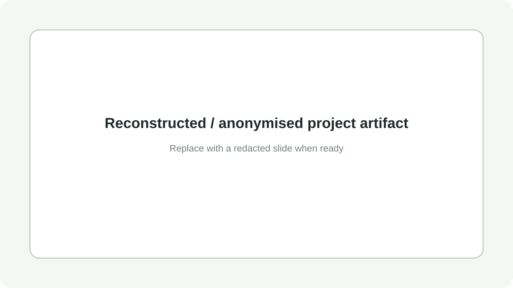

Reframing the Digital Purchase Journey
What started as a question about one digital product experience evolved into a cross-market foundational study of the end-to-end vehicle purchase journey.
A model-page question was too narrow for the decision we needed to support.
The initial request was to understand how people navigate the model experience on Porsche.com. I proposed expanding the scope to the full purchase journey so we would not optimise one fragment without understanding the broader decision context.
I secured additional cross-functional funding for the broader study, enabling other teams to benefit from the same foundational research.
A cross-market foundational study.
The study included 90 qualitative interviews: 30 in Germany, 30 in the US and 30 in China. Participants were in an active consideration or purchase phase; some repeat buyers were included, and selected participants were interviewed twice when their journey extended over a longer period.
I was responsible for study concept, tendering, agency steering, quality control and stakeholder alignment. The research agency handled recruitment, fieldwork and the operational analysis/reporting.
The same touchpoint can serve different jobs at different moments.
The journey was reconstructed across phases rather than treated as a simple sequence of pages. One important example was the configurator: it was used at a different point in the journey than previously assumed and served different purposes over time.

The study became a foundation for journey design.
The configurator's role was reconsidered based on observed behaviour.
The research revealed a mental model for how decisions evolve throughout the purchase process without exposing the confidential sequence itself.
This supported decisions about content prioritisation and where information should live across digital touchpoints.
The segmentation provided an additional lens for interpreting different journey patterns; details remain confidential.
Content on the model experience was reordered based on the study, and the research became a cross-functional reference for journey and touchpoint design.
Show the work without publishing the findings.
The live portfolio can include reconstructed or redacted artifacts that demonstrate the type of output without disclosing confidential research results.

Reconstructed structure; no original findings.
Redacted labels and characteristics.
Show the artifact format, not the confidential mapping.
Project visuals shown in this portfolio are reconstructed or anonymised and do not contain confidential research data.